SERIES 01 — TSUDA SHOICHI
左美都の神話と伝承 Myth and Tradition of Samizu
長野県長野市信更町三水（左美都）。土地に積もった神話・伝承・地質を、油彩の筆致で掘り起こす連作シリーズの展示記録。
SCROLL
長野県長野市信更町三水（左美都）。土地に積もった神話・伝承・地質を、油彩の筆致で掘り起こす連作シリーズの展示記録。
なぜ私たちは、別の場所で
生まれ育つことが できなかったのでしょうか。
1300万年前から1600万年前にかけて堆積した地層を有し、古代の人々が神聖視した岩盤や石窟が点在する。
石祠や柱状節理に見られる興味深い地形は、古くから神霊が宿る場として崇められ、祈りと結界の対象であった。
町問屋御普請受拝帳などの古文書、平安期の土師器——断片化した史料が、地域の共同体の中心を物語っている。
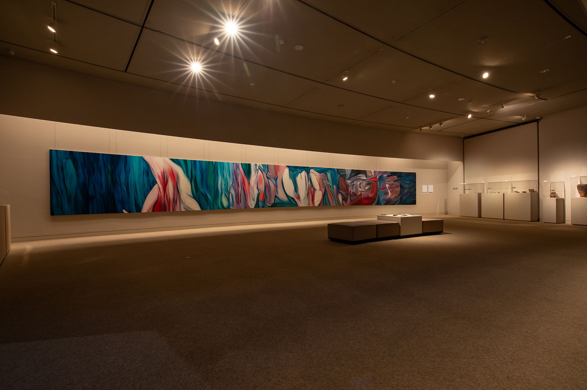
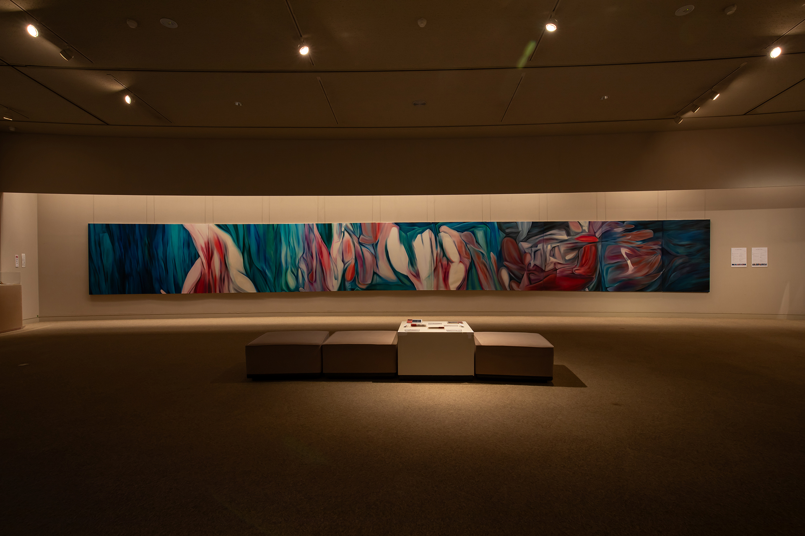
油彩による描画の過程で、土地の輪郭や色彩は解体され、再び結びなおされていく。この運動の中で見いだされるのが〈いと〉——それ以上細分化できない、存在の最小単位である。
左美都の渓谷、岩肌、植生の記憶は、具象と抽象のあわいを揺れ動きながら、画面の上で新たな地層を形成していく。
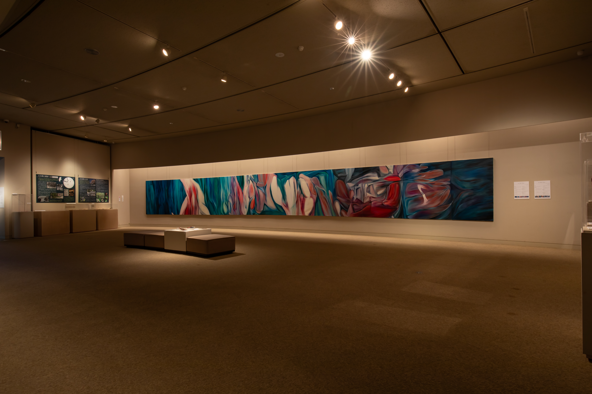
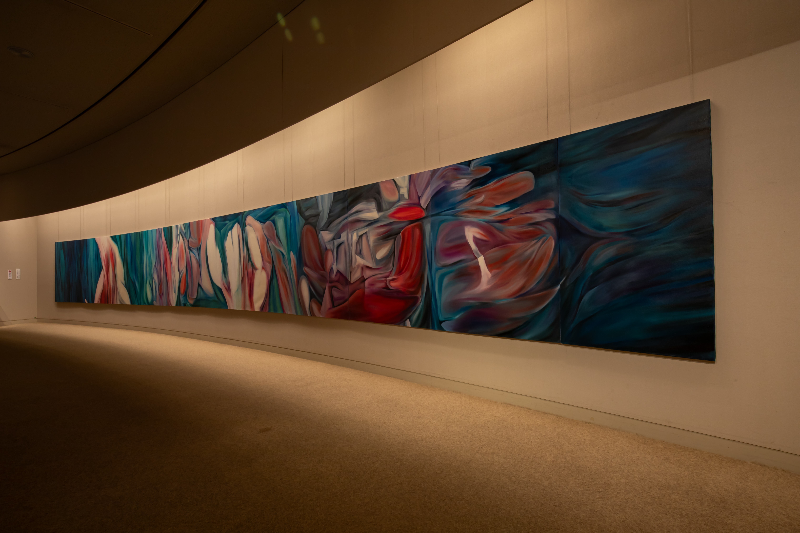
テールやえんじ、青緑——身体的な色彩は、岩や水、植生といった土地の記憶と重なり合い、絵画は次第に〈物語〉へと再編されていく。
それは個人的な経験から出発しながら、人間存在そのものを照らし返す試みでもある。
会場で連作を体験する視点の数々。クリックで拡大表示できます。
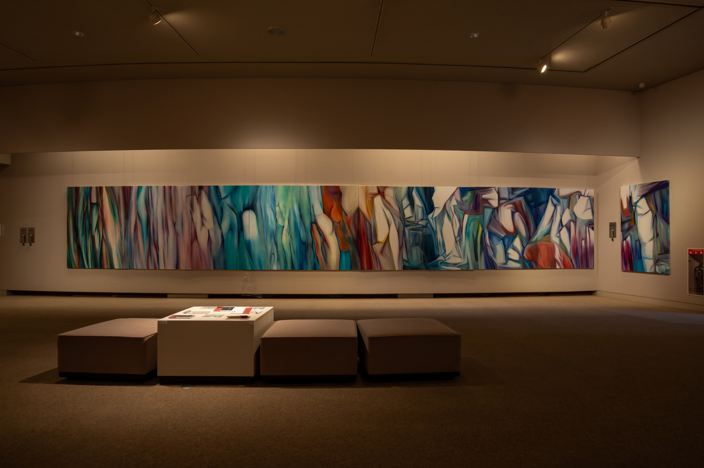
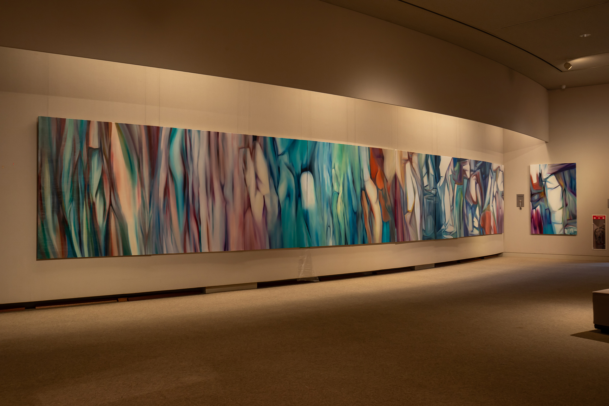
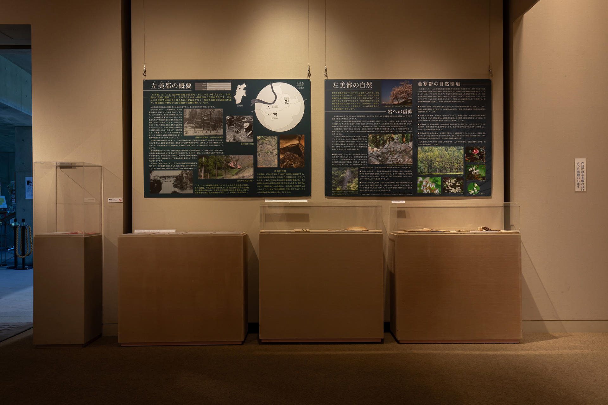
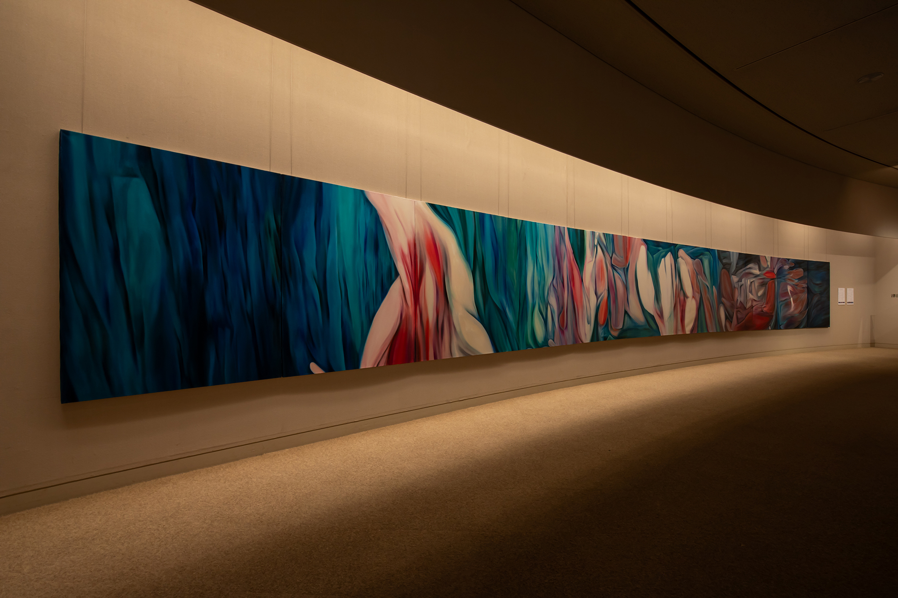
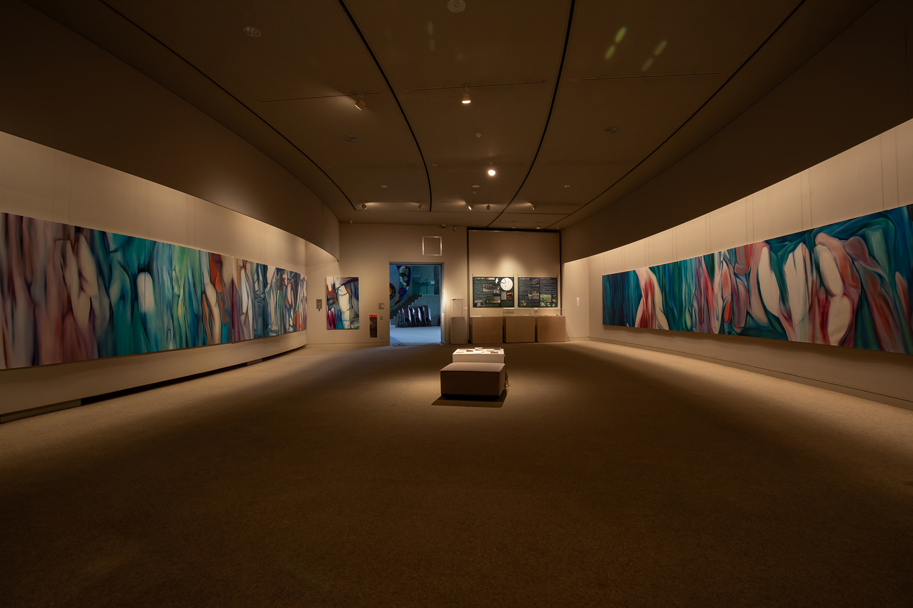
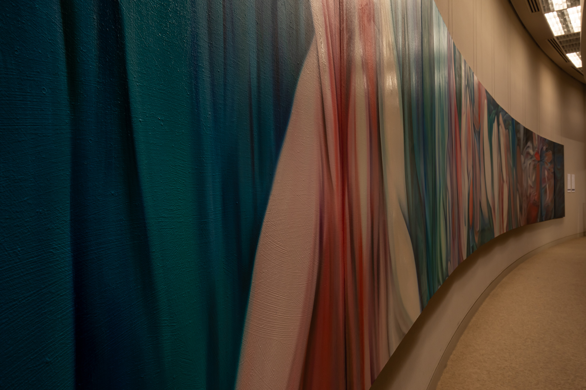
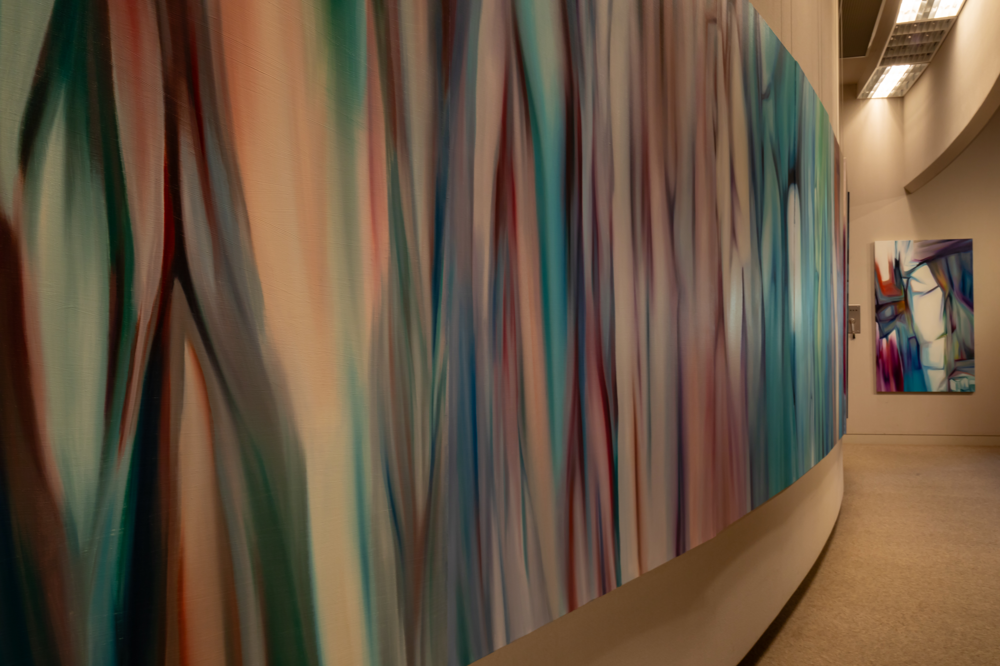

町問屋御普請受拝帳、古文書の断片、平安期の土師器——会場にあわせて展示された史料群は、絵画と呼応しながら、左美都という土地の記憶を物語る。
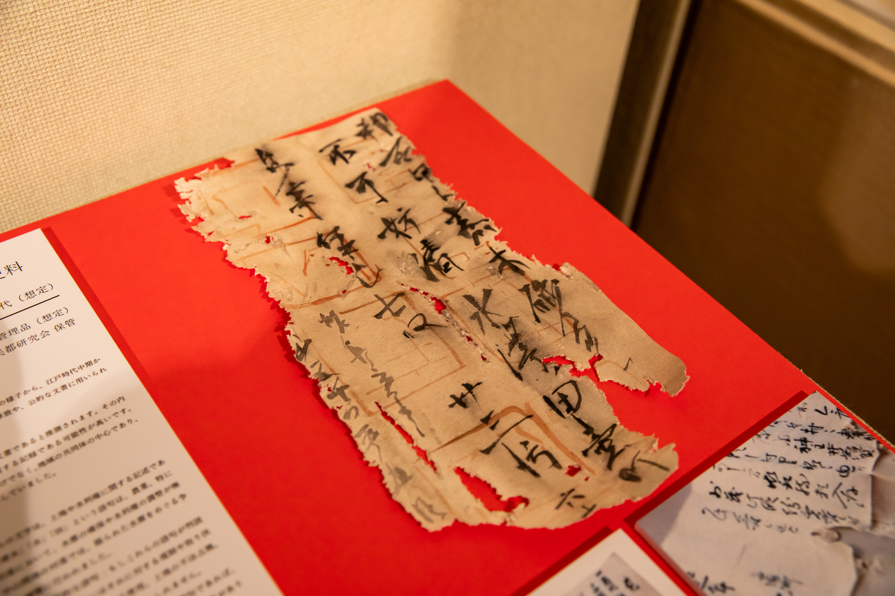
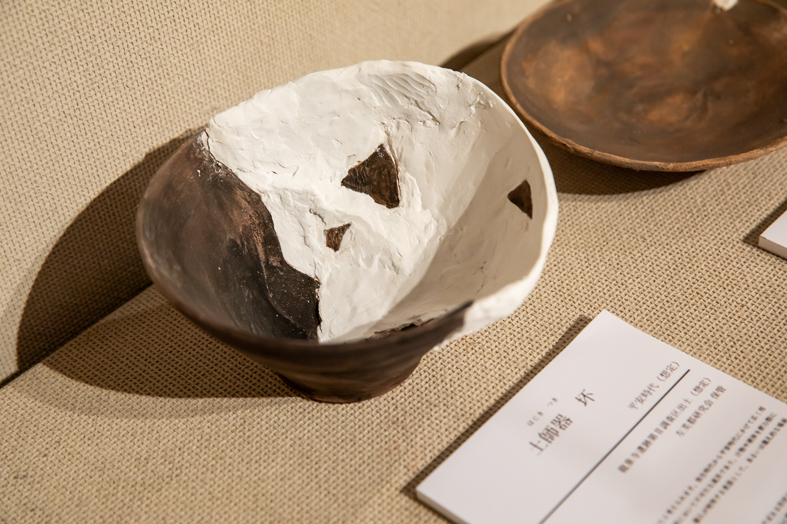

土地の記憶は、消えてゆくのではなく、
かたちを変えてわたしたちの中に還っていく。
展覧会・作品購入・取材・コラボレーション等、
お気軽にご連絡ください。